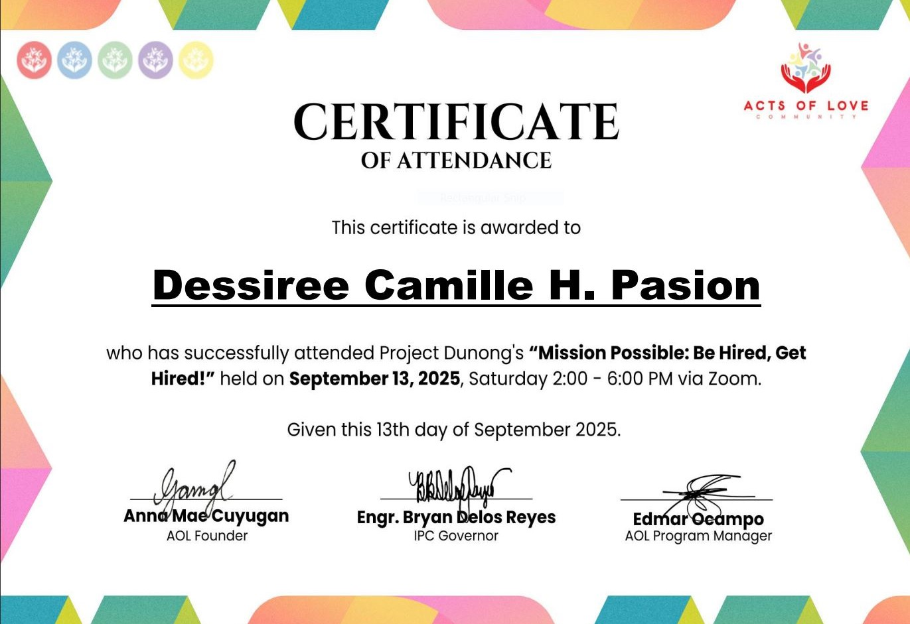
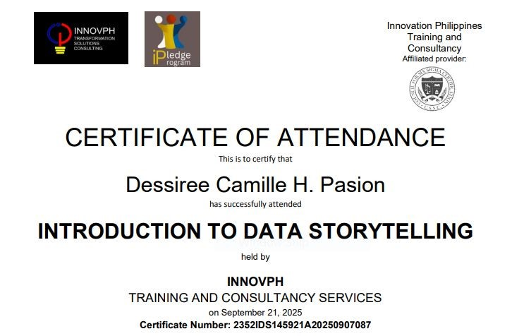
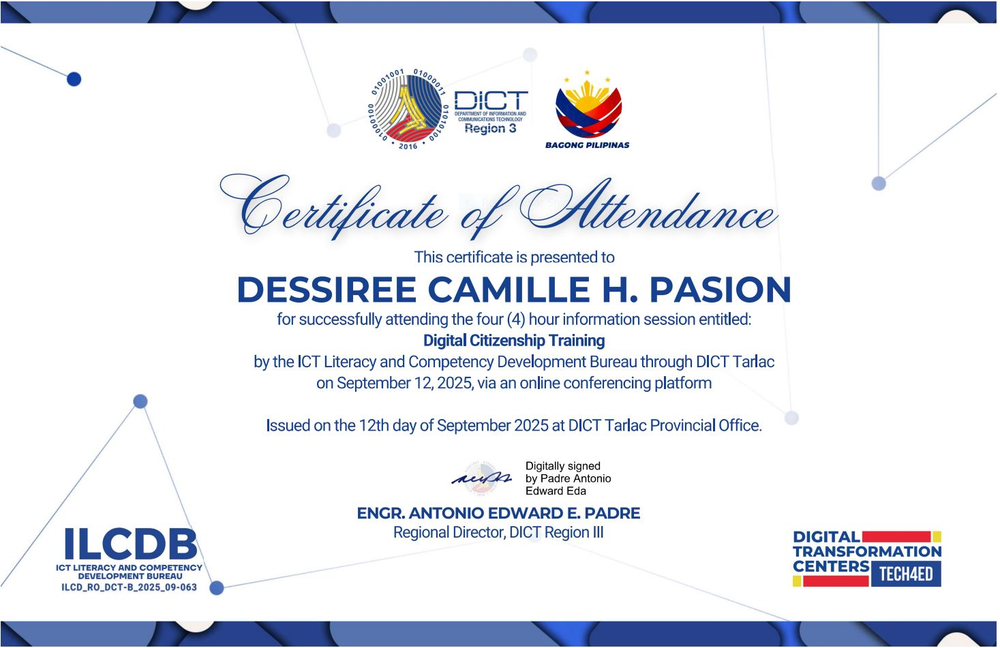
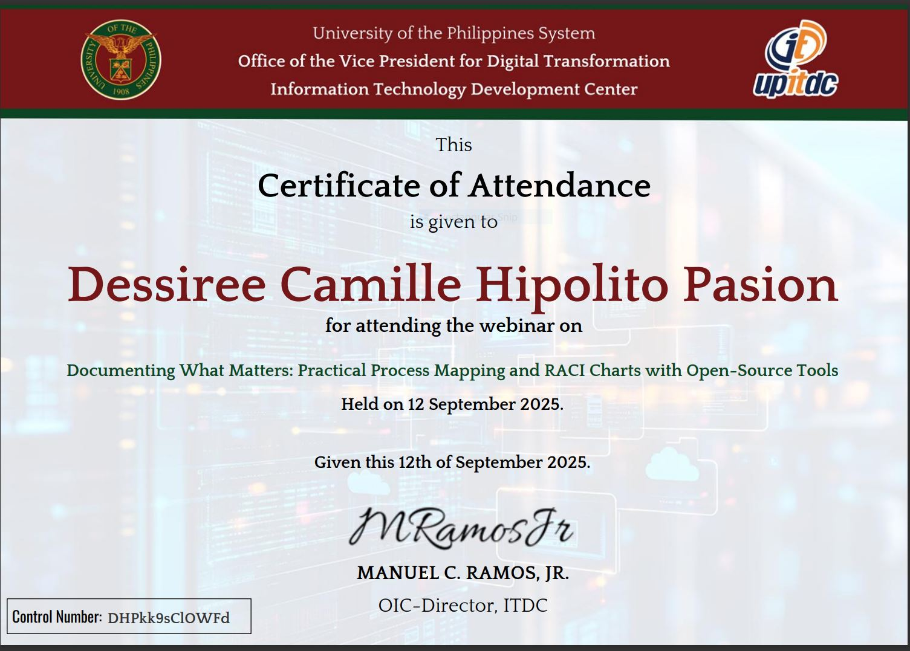
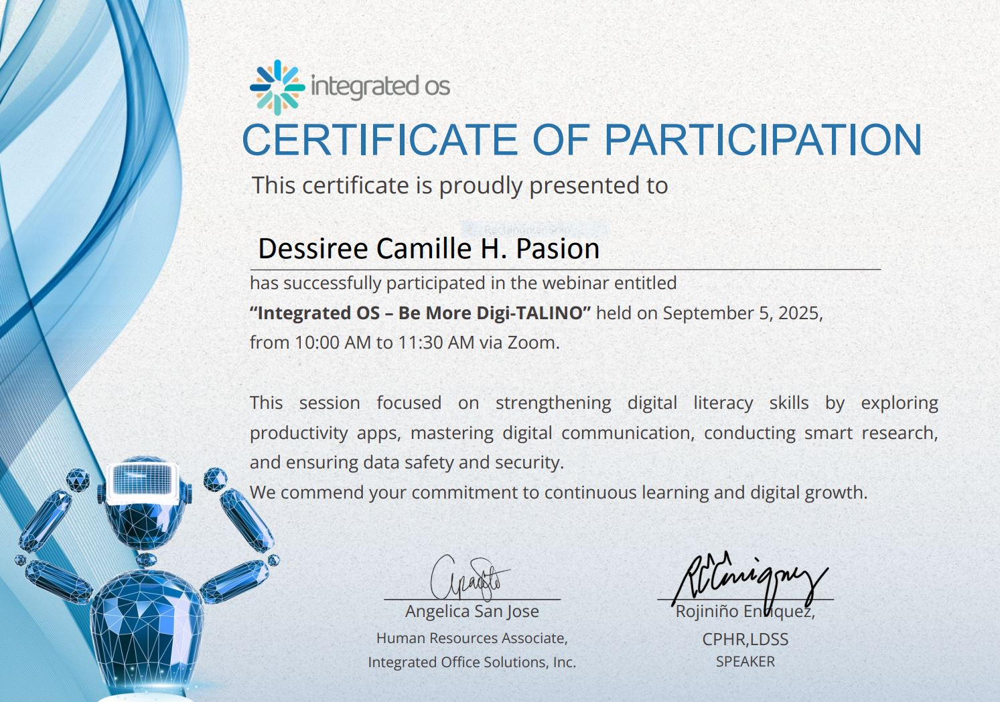
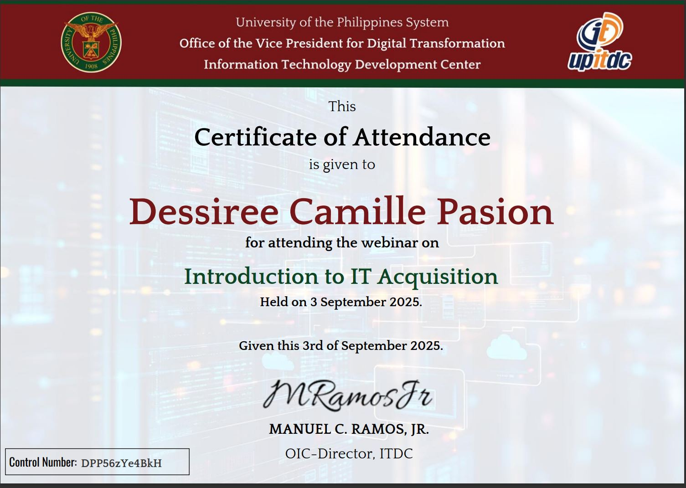
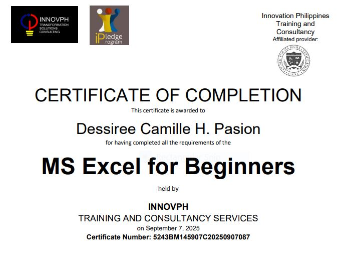
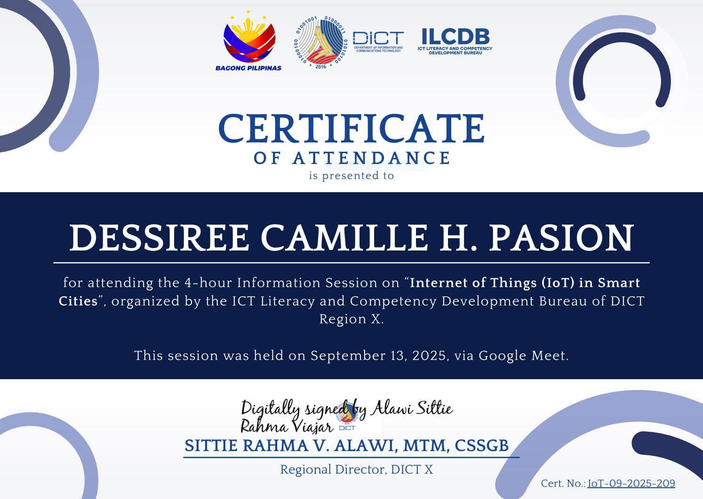
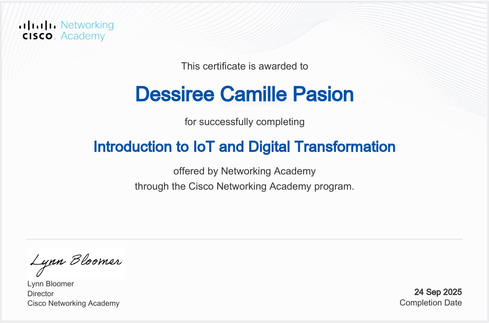
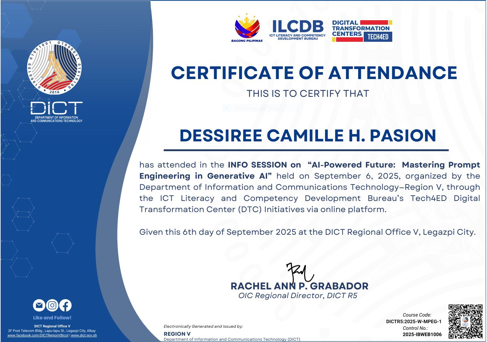

Winter Priestess
Home
Skills
Projects
Certificates
About
Certificates
Hour of Code
Embedded Systems
Certificate - AOL

Data Storytelling

Digital Citizenship

Documenting What Matters

Integrated OS - Be More Digit-TALINO

Introduction to IT Acquisition

MS Excel For Beginners

Internet of Things in Smart Cities

Introduction to IoT and Digital Transformation

AI-Powered Future: Mastering Prompt Engineering in Generative AI
